Tickets → KB articles
Resolved engineering changes turned into step-by-step knowledge-base articles for service-desk and content-manager audiences.
Evidence: module inventory & session handoff docs, marketing platform
Technical Writer · Knowledge Base & Documentation · UX/UI Developer
I'm Nicholas Walline, UX/UI developer and technical writer at Blac Flag, LLC (Moorpark, CA — remote). I write product and process documentation and design the interfaces it describes — so guides, SOPs, and knowledge-base articles show users exactly what they see on screen.
I documented the Community Benefit Programs portal (cbprograms.org) and contributed its UX/UI design and software development. Portal writing samples are withheld under the client's NDA; equivalent documentation from other projects is available on request. Software developer since 2025, on top of 10+ years of hands-on technical experience in hardware and live production.
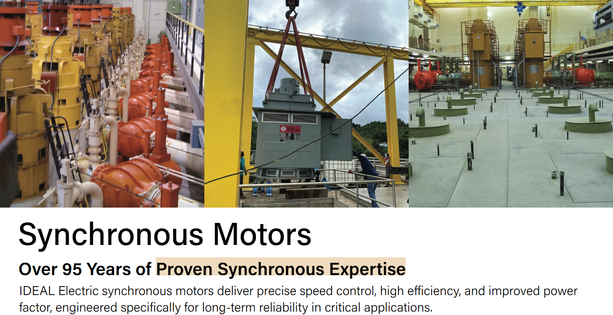
Mapped directly to the role's responsibilities — with the project evidence to back each one.
Resolved engineering changes turned into step-by-step knowledge-base articles for service-desk and content-manager audiences.
Evidence: module inventory & session handoff docs, marketing platform
As-built records maintained as engineers change systems: handoff logs, spacing standards (MD + PDF), verification reports.
Evidence: handoff records, spacing guide, verification reports
Documentation inventories and baselines that let an owner hand the system to another vendor at any time.
Evidence: module inventory, Konekt technical design doc
Monthly-style validation cadence: manual verification guides, admin summaries, and retired/superseded doc archives.
Evidence: manual verification guides, admin verification summaries
Built documentation inventories from scratch for transitioning systems — the exact first deliverable of a transition.
Evidence: E-ink documentation set, Vincore docs suite
Docs-as-code: versioned Markdown shipped with the codebase, plus PDF deliverables where the audience needs them. Each entry describes what the documentation actually contains.
The module inventory specs every reusable carousel, accordion, and vertical scroller — editable fields, image requirements, and maximum usage per page — so non-technical content managers can build pages safely. The spacing guide reduces the entire site to six numbers and two section types. Handoff records log each session's completed work, files touched, and exact styling values used.
Live page shown in the Work section below
Five formal No-Load Vibration Capture Reports from an onsite motor test day — one per unit under test (Ward Leonard ×2, GEQ Drillmax604, GE 5GEB22D4, Hitachi IEC 60349-2) — each with unit identification, instrumentation details, and pass/fail verification tables covering recording integrity, sample-rate lock, sensor bias, idle floor, and signal-to-floor ratio. Paired with a plain-English FFT report for non-engineer stakeholders, a timestamped factory test log, and a BLE connection troubleshooting writeup.
Reports shown in the Work section below
Knowledge-base articles, SOPs, and user-facing help content for a public benefits portal — plus its UX/UI design and software development. Writing samples withheld under client NDA; structure and process available on request.
Blac Flag, LLC — client under NDA
The contributing guide sets the quality bar for new ECU detection families — "fewer maps that are right rather than more maps that are almost right" — and maps the repository layout for new contributors. Fork notes itemize every change versus upstream (branding, app identifier, updater disabled) with trademark attribution preserved.
Maintained in English, French, German, Spanish, Italian, Portuguese
The install guide walks from prerequisites (Node 18+, TypeScript, optional g++/CMake/Docker) through step-by-step setup. The README documents 31 developer tools across code execution, linting, testing, Git operations, Docker, deployment, and security scanning.
Install guide · configuration guide · worked examples
Quick-install from VSIX in four numbered steps with the keyboard shortcut (Ctrl+Shift+K) and agent-server startup commands. The README states requirements first — VS Code 1.85+, Ollama, Python 3.10+ — before setup begins.
Install guide · README with prerequisites
The troubleshooting guide diagnoses why Indeed blocks automated access (Cloudflare 403 protection) and documents the working replacement: three Adzuna API searches returning 100–130+ jobs per run at no cost. The workflow overview lists the ten-plus job boards covered and why the API approach avoids anti-bot detection.
Setup SOP · troubleshooting guide · workflow overview
A step-by-step Raspberry Pi integration tutorial synthesized from the manufacturer's datasheet, schematic, and outline drawing — turning raw engineering source material into a procedure a builder can follow.
Tutorial written from ER-EPD037 datasheet + schematic set
The data-collection guide is an 18-tool reference table — RW-Everything, GPU-Z, USBPcap, Wireshark, HWiNFO64, powercfg and more — mapping each tool to its purpose and captured output. The fan-curve methodology explains why the firmware tables are inaccessible (encrypted AES-256 config, empty ACPI limits) and documents the empirical capture strategy that replaced them.
Tool reference table · empirical capture methodology
READMEs are documentation too: public, versioned, and written to be read. Each repository below is live on GitHub.
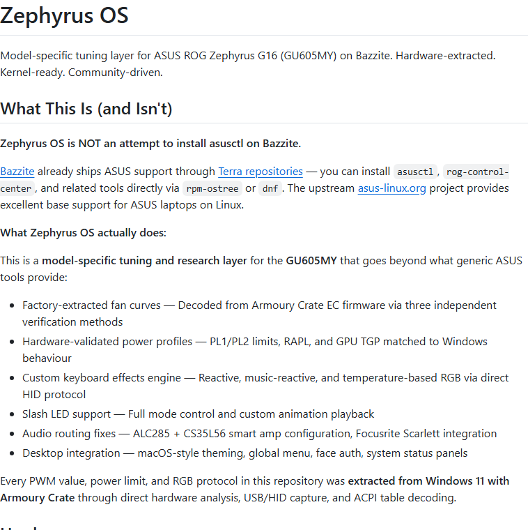
ZephyrusOS Model-specific tuning layer for the ASUS ROG Zephyrus G16, built from hardware-extracted data — README states what the project is (and isn't) and links every claim to its source. Rust · README as project documentation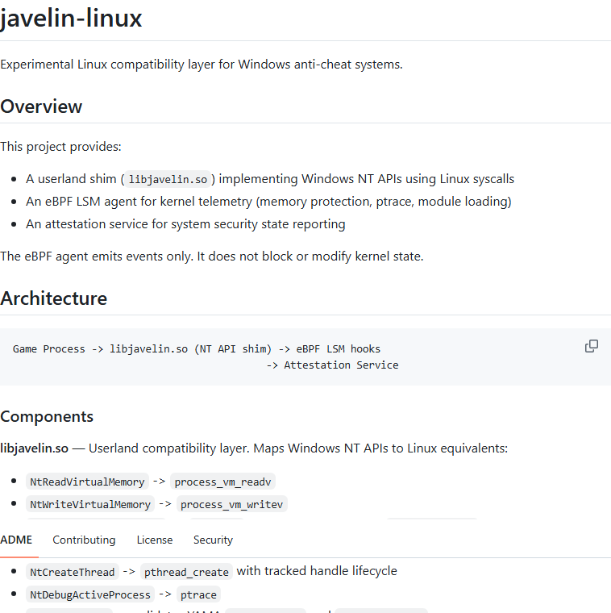
javelin-linux Experimental Linux compatibility layer — README documents the userland shim, eBPF LSM agent, and attestation service architecture for a specialized audience. C · Architecture documentation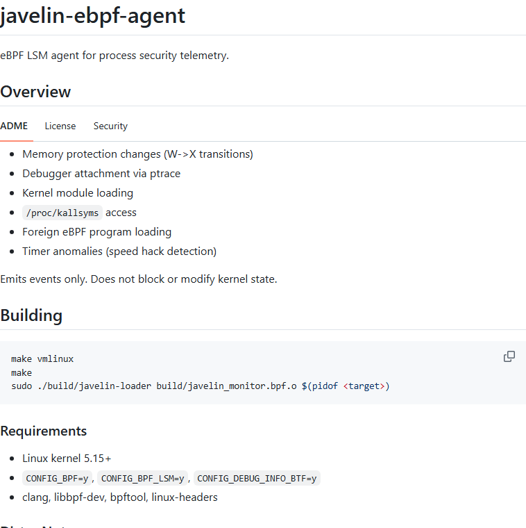
javelin-ebpf-agent eBPF LSM agent for process security telemetry — README enumerates every monitored kernel event, with emission-only semantics stated plainly up front. C · Reference documentation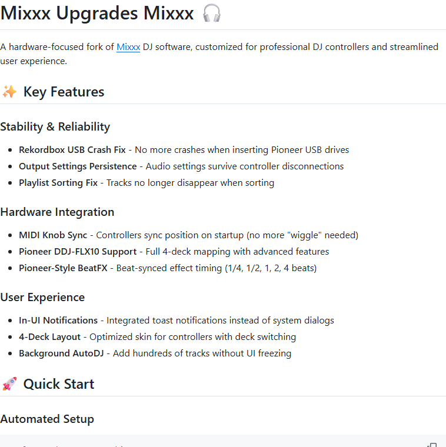
Mixxx-Upgrades Hardware-focused fork of Mixxx DJ software — README organizes crash fixes and controller integrations as user-facing feature documentation. C++ · User-facing docsFull profile: github.com/Kingsolarious
Real, shipped interfaces at full width — not thumbnails. Click any image to open it full-screen; click again inside the viewer for 100% actual pixels. Captured live from the current build (November 2026).
Hero + title sections · React/TypeScript + Payload CMS marketing platform · current build captured live from the dev server
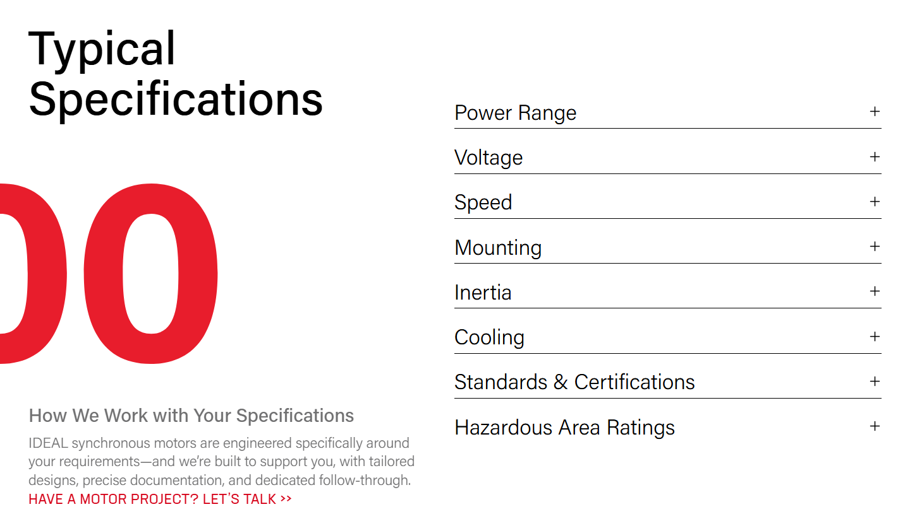
Typical Specifications — power range, voltage, speed, mounting, inertia, cooling, standards — each row a documented, editable component
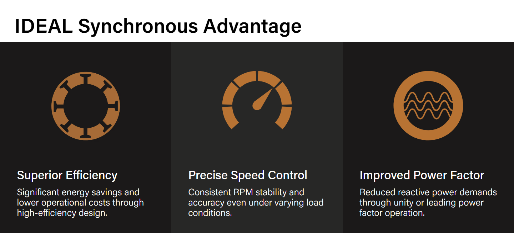
The IDEAL Synchronous Advantage — Superior Efficiency, Precise Speed Control, Improved Power Factor, Built for Generations · reusable documented components
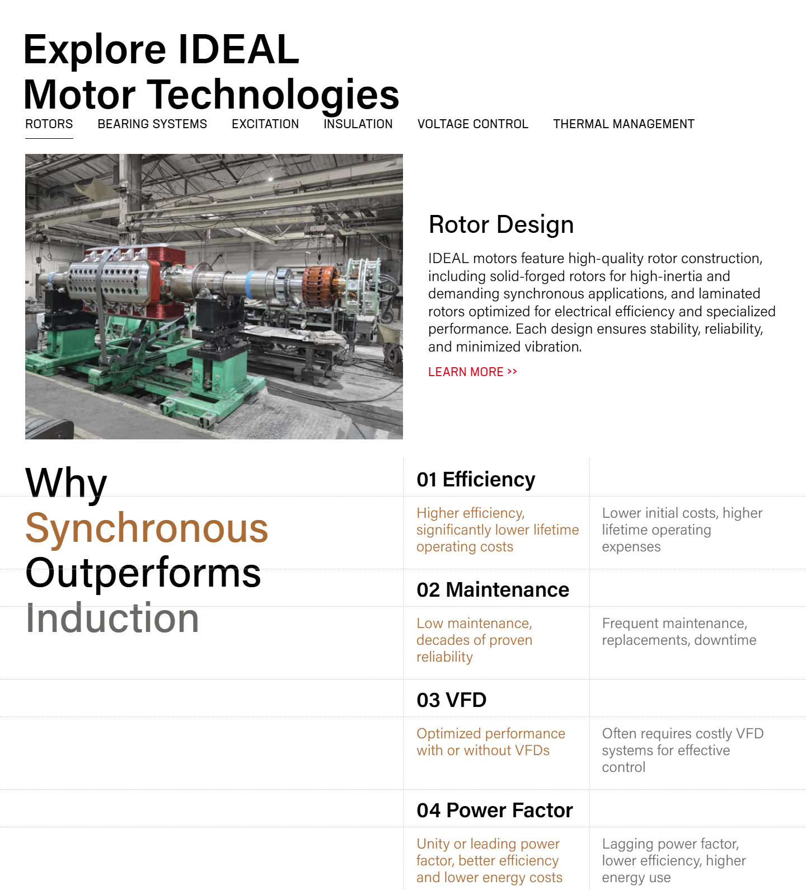
Rotor Design editorial content, the four-part Why Synchronous Outperforms Induction comparison, and the Industries We Serve grid with per-industry photography
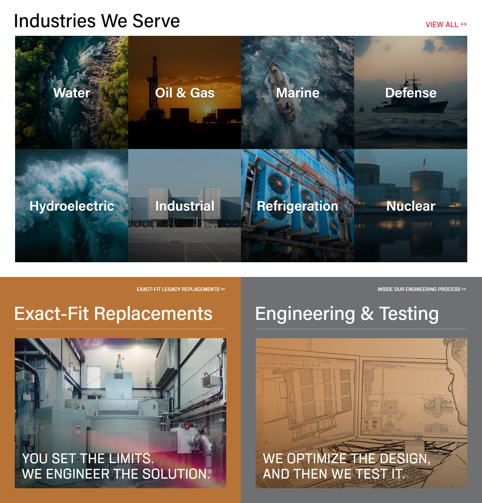
Industries We Serve (Water, Oil & Gas, Marine, Defense, Hydroelectric, Industrial, Refrigeration, Nuclear) and the Exact-Fit Replacements / Engineering & Testing panels — full sections, exactly as shipped
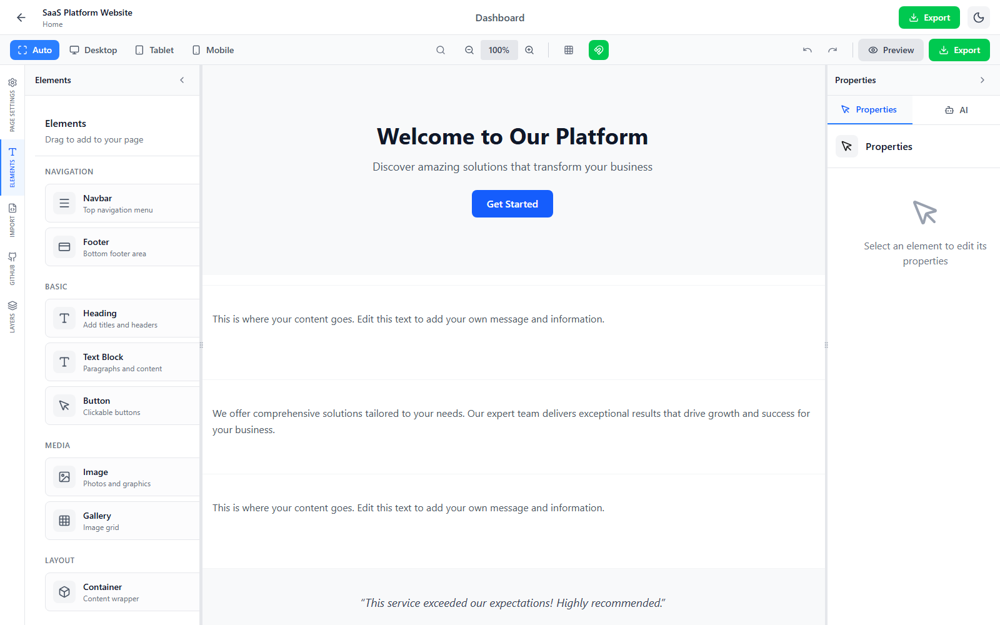
Wireframe editor — drag-and-drop canvas with an elements palette (navbar, hero, buttons, galleries), live properties panel, device-preview toggle, and Git-backed export · React 19, TypeScript, Vite, Tailwind CSS 4
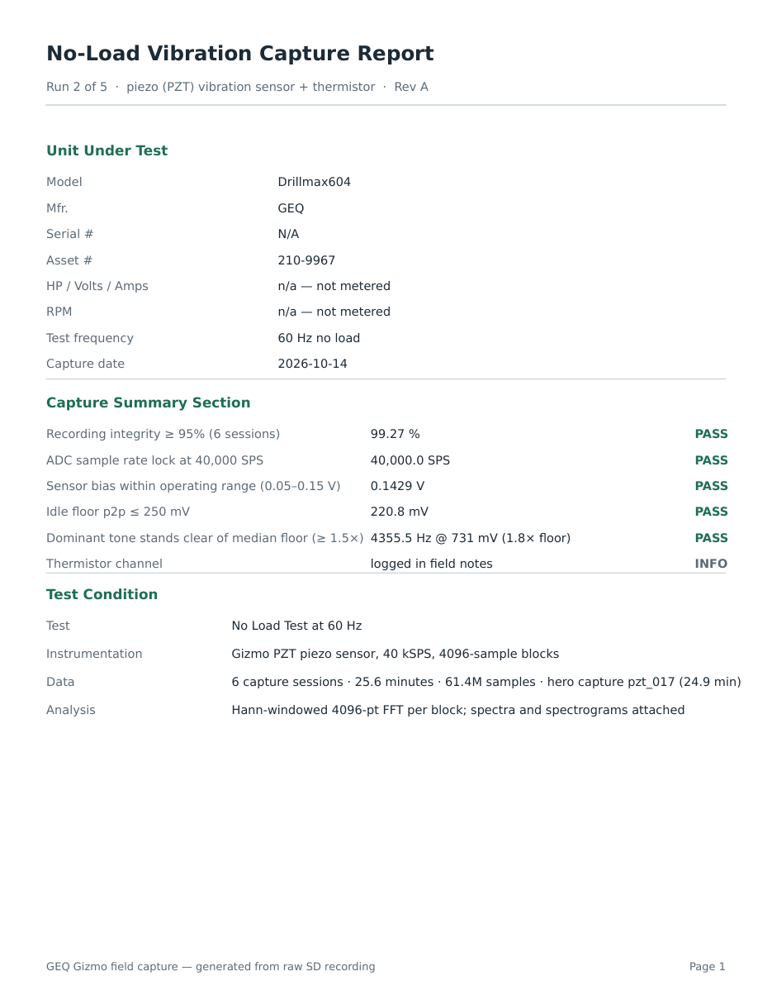
Run 2 of 5 — GEQ Drillmax604 · compiled from 61.4M raw samples recorded onsite, October 14 2026 · pass/fail verification table — 5 PASS, 1 INFO
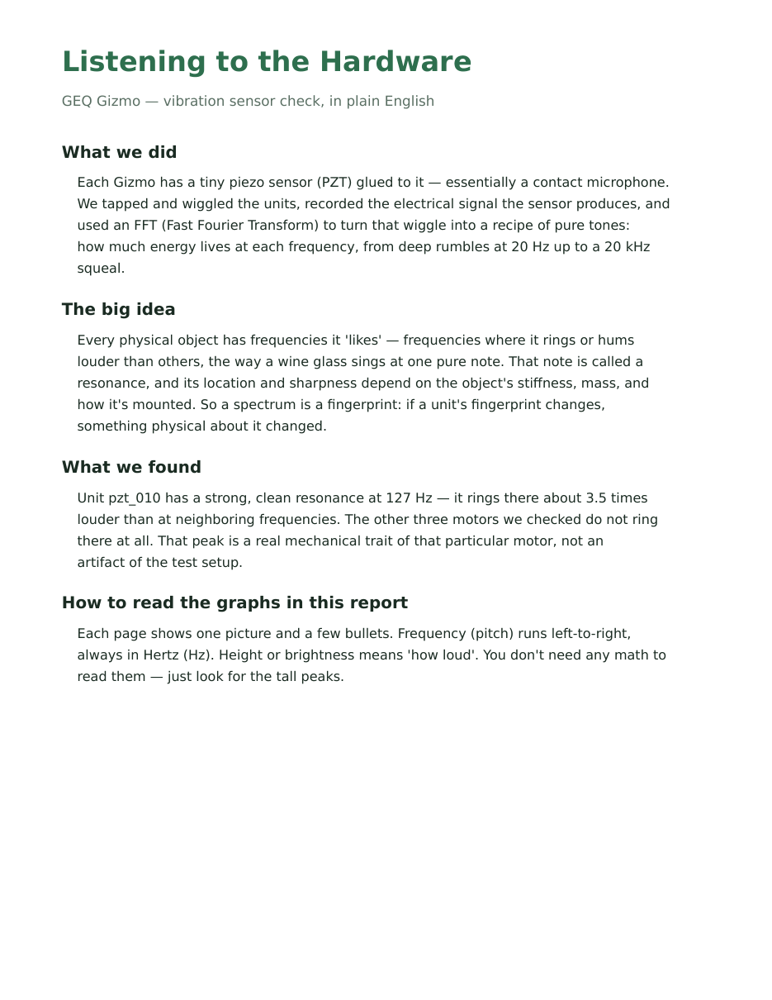
13-page stakeholder report written from the same field data — what we did, the big idea, what we found (a 127 Hz resonance unique to one unit), how to read the graphs
The other half of the job: designing and building the interfaces the documentation describes.
UX/UI design and software development for a community benefit programs portal serving the public. (Blac Flag — NDA.)
React/TypeScript front-end with a reusable component library — every component spec'd in the module inventory for content managers. Full sections shown in the Work section above.
Blac Flag product application — drag-and-drop website builder with AI generation and Git version control. React 19, TypeScript, Vite, Tailwind CSS 4. Wireframe editor shown above.
Sensor circuit design, CAD-modeled and 3D-printed enclosures, React-based interfaces, and AI-powered search tools — hardware and software documented as one system.
Interface design and front-end development for a billing app, beat store, mechanic CRM, and retail kiosk — web and kiosk form factors. Includes the Feedback Overlay for Sites, one of the first projects built after starting development in 2025 (within the first few months).
Technical Writer / Knowledge Base & Documentation Specialist
UX/UI Developer and Technical Writer — Blac Flag, LLC
Moorpark, CA · Remote · (661) 607-1489 · nickw1992@icloud.com · linkedin.com/in/nick-walline-04274b92
UX/UI developer and technical writer at Blac Flag. Writes product and process documentation and designs the interfaces it describes, so guides match what users actually see on screen. Documented the Community Benefit Programs portal (cbprograms.org) and contributed its UX/UI design and software development. Software developer since 2025, building on 10+ years of hands-on technical experience in hardware and live production. U.S. Person — ITAR/EAR eligible.
Documentation: knowledge-base articles, SOPs, runbooks, user guides, process & system documentation, documentation inventory, content review/retirement · UX/UI & Front-end: interface design, React, TypeScript, HTML, CSS, JavaScript, Tailwind, Vite, server-side configuration, Docker, AI-powered search · Tools: Confluence, Jira, SharePoint, Git/GitHub, Markdown, VS Code · Hardware context: PCB assembly & rework, CAD, 3D printing, embedded systems, test equipment
College of the Canyons — Associate Coursework · Valencia High School — Diploma · U.S. Person Status — ITAR/EAR Eligible
Available for the Technical Writer / Knowledge Base & Documentation role. Writing samples, documentation inventories, and references available on request.
(661) 607-1489 · Moorpark, CA · Remote